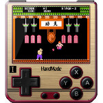
Handmade01 (黑妹01)∗ 設計
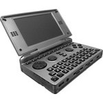
Pandora 1GHz∗ 介紹
∗ 拆機
∗ 新材料
∗ UART傳輸線
∗ 修改螢幕仰角
∗ 如何固定電池
∗ 如何改善L、R按鈕問題
∗ 如何透過MiniUSB連接USB裝置
⊕ Debian Mark2
∗ 安裝系統
∗ 如何掛載PND檔案
∗ 掛載主板上的Flash
∗ 架設ScratchBox環境
∗ 連接Pentax PocketJet200熱感印表機
∗ 解決USBHostTrigger的問題
∗ 解決無法啟動scim-pinyin的問題
∗ 解決無法更改scim-pinyin字型的問題
∗ 解決qtcreator的"initialize OpenGL"問題
∗ 如何在Pidgin上使用LINE聊天軟體
∗ 如何在Pidgin上使用Skype聊天軟體
∗ build pnd library
∗ build kicad 4.0.1
∗ build kernel 3.2.78
∗ build openssl 1.0.2g
∗ build mipsel toolchain(buildroot 201602)
⊕ Debian Mark3
∗ 安裝系統
⊕ Ubuntu
∗ 安裝系統
⊕ Slackware
∗ 安裝系統
⊕ SuperZaxxon
∗ 安裝系統
∗ 中文化輸入法
∗ 使用Android系統
∗ 調整GPU、RAM速度
∗ 如何刷新Menu
∗ 如何透過藍牙接收檔案
∗ 如何同時使用Debian系統
∗ 如何設定到最佳的顯示顏色
∗ 如何讓SDCard可以顯示中文檔名
 Pandora Rebirth
Pandora Rebirth
∗ 介紹
∗ 拆機
∗ 支援鍵盤背光
∗ 支援振動馬達
⊕ Debian Mark3
∗ build kernel 3.2.78
⊕ SuperZaxxon
∗ 如何使用ext4系統
∗ 安裝libsdl-mixer-1.2-dev
∗ 移植PCSX ReARMed(支援振動功能)
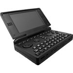
Pandora Classic∗ 介紹
∗ 拆機
∗ 更換螢幕
∗ 電池(Out of temperature)
GP2X Wiz
∗ 介紹
∗ 拆機
∗ 更換DPad按鈕
∗ 更換OLED螢幕
∗ 製作UART傳輸線
∗ 解析Pollux UART.nb0
∗ GMenu2X支援中文檔名
∗ 安裝IPK(Qtopia)
∗ 安裝Qtopia(SDCard)
∗ 安裝原廠系統(Flash)(透過UART)
∗ 安裝原廠系統(Flash)(透過SDCard)
∗ 如何讓USB介面變成UART裝置
∗ 如何讓USB介面變成Network裝置
∗ build uboot
∗ build kernel
∗ build warm
∗ build fba-gp2x-b73
∗ build pollux_dpc_set
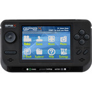
GP2X F300∗ 介紹
∗ 拆機
∗ PS1模擬器
∗ Sharp 3.7V 1700mA電池
GP2X Caanoo
∗ 介紹
∗ 拆機
∗ 連接器腳位
∗ 修改喇叭位置
∗ build uboot
∗ build kernel
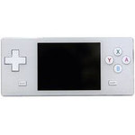
Dingoo A320∗ 介紹
∗ 拆機
∗ 更換顏色
∗ 更換按鈕
∗ 焊接UART接頭
∗ PSX Ultra Ripper
∗ 更換螢幕(2.8吋 TFT ILI9325)
∗ 更換螢幕(2.6吋 IPS ILI9340)
∗ 更換螢幕(2.8吋 IPS S6D04M0X21)
∗ 更換螢幕(2.8吋 OLED S6E63D6)
⊕ Dingoo
∗ Unbrick Tool
∗ 解析App文件格式
∗ 安裝系統(Flash)
∗ 修正ILI9325豎紋問題
∗ Patch ILI9338.DL(支援ILI9340)
∗ Patch ILI9338.DL(支援S6D04M0X21)
⊕ S2D SDK
∗ 開發環境(Windows)
⊕ Dingoo SDK
∗ 開發環境(Ubuntu)
∗ 開發環境(Windows)
⊕ Dual Boot
∗ 支援ILI9340
∗ 支援S6D04M0X21
⊕ Dingux
∗ 安裝系統(MiniSD)
∗ build fba
∗ build fba-sdl
∗ build fba-capex
∗ build fceu
∗ build uboot
∗ build snes9x
∗ build gnuboy
∗ build hwinit
∗ build kernel
∗ build psx4all
∗ build gmenu2x
∗ build openbor
∗ build mame4all
∗ build libao-1.2.0
∗ 移植ILI9340驅動程式
∗ 移植S6D04M0X21驅動程式
⊕ OpenDingux
∗ 安裝系統(QEMU)
∗ 安裝系統(MiniSD)
∗ build kernel
∗ build ubiboot
∗ build buildroot
∗ 修正ILI9338青藍色問題
∗ 移植ILI9340驅動程式
∗ 移植S6D04M0X21驅動程式
∗ 如何使用超過64G的SDCard
∗ 解決"@itemx must follow @item"問題
∗ 解決"no matching @end multitable"問題
∗ 解決"Can't use 'defined(@array)' ... line 373."
Gemei X760+
∗ 介紹
∗ 拆機
∗ 焊接UART接頭
Gemei A330
∗ 介紹
∗ 開發環境
∗ 反組譯韌體
∗ MiniSD開機
∗ 焊接UART接頭
∗ Unbrick Tool
∗ 安裝系統(Flash)
∗ (MyBootloader) UART
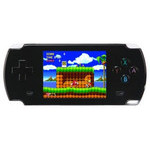
Dingoo Tech A330∗ 介紹
∗ 拆機
∗ 更改喇叭位置
∗ 焊接UART接頭
∗ 如何玩A320的七夜遊戲
∗ 更換螢幕(2.6吋 IPS ILI9340)
∗ 更換螢幕(2.8吋 IPS S6D04M0X21)
⊕ Dingoo
∗ 安裝系統(Flash)
∗ 逆向AppMain()
∗ Unbrick Tool
∗ Show Register
∗ Patch ILI9338.DL(支援ILI9340)
∗ Patch ILI9338.DL(支援S6D04M0X21)
⊕ Dual Boot
∗ 支援S6D04M0X21
⊕ Dingux
∗ 安裝系統(MiniSD)
∗ 移植S6D04M0X21驅動程式
⊕ OpenDingux
∗ 安裝系統(MiniSD)
∗ 移植S6D04M0X21驅動程式
∗ 如何使用超過64G的SDCard
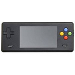
Dingoo Tech A380∗ 介紹
∗ 拆機
∗ 實驗機
∗ 移動SDCard0
∗ 焊接UART接頭
⊕ Dingoo
∗ 安裝系統
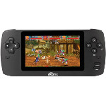
Ritmix RZX-50∗ 介紹
∗ 拆機
∗ 焊接UART接頭
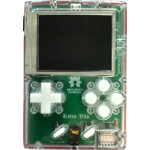
Retro V3S∗ 拆機
∗ 透明外殼
∗ 改造電池和UART接頭
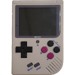
Miyoo∗ 介紹
∗ 拆機
∗ 可視角
∗ 支援震動馬達
∗ 燒錄原廠韌體
∗ 焊接UART接頭
∗ 修復USB連接問題
∗ 如何從MicroSD開機
∗ BROM Boot Header
∗ 改造電池以及L1、R1、L2、R2按鍵
∗ 如何將XBoot的輸出訊息轉到UART1
∗ 修復MicroSD問題(1Bit改成4Bits)
∗ mksunxi.c
∗ build sms
∗ build gmu
∗ build wqx
∗ build bard
∗ build rott
∗ build gpsp
∗ build pang
∗ build liero
∗ build ohboy
∗ build gngeo
∗ build flite
∗ build uboot
∗ build xboot
∗ build cdogs
∗ build fceux
∗ build ccdoom
∗ build wolf3d
∗ build temper
∗ build sdlpal
∗ build digger
∗ build dosbox
∗ build hhexen
∗ build openbor
∗ build eduke32
∗ build bennugd
∗ build jinyong
∗ build gmenunx
∗ build snowman
∗ build wizwrite
∗ build hheretic
∗ build mame4all
∗ build gambatte
∗ build glutexto
∗ build snes9x4d
∗ build buildroot
∗ build picodrive
∗ build commander
∗ build tombstone
∗ build mrdrillux
∗ build sparrow3d
∗ build lemonboy2x
∗ build asciiportal
∗ build luajit 2.0.5
∗ build pcsx_rearmed
∗ build kernel 4.14.0
∗ build libmikmod 3.1.21.1
∗ 移植UBoot
∗ 移植XBoot
⊕ Assembly
∗ LED
∗ UART
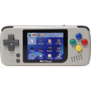
PocketGo∗ 介紹
∗ 拆機
⊕ Retroarch
∗ build retroarch
∗ build gpsp
∗ build mgba
∗ build hatari
∗ build flycast
∗ build fbalpha
∗ build pokemini
∗ build nestopia
∗ build vba-next
∗ build freeintv
∗ build picodrive
∗ build snes9x
∗ build snes9x2002
∗ build snes9x2005
∗ build snes9x2010
∗ build libretro-fba
∗ build libretro-vecx
∗ build libretro-o2em
∗ build libretro-cap32
∗ build libretro-handy
∗ build libretro-fceumm
∗ build libretro-atari800
∗ build gw-libretro
∗ build 4do-libretro
∗ build fmsx-libretro
∗ build quicknes_core
∗ build genesis-plus-gx
∗ build tgbdual-libretro
∗ build bluemsx-libretro
∗ build gambatte-libretro
∗ build prosystem-libretro
∗ build stella2014-libretro
∗ build virtualjaguar-libretro
∗ build mame-libretro
∗ build mame2000-libretro
∗ build mame2003-libretro
∗ build mame2003-plus-libretro
∗ build mame2010-libretro
∗ build mame2015-libretro
∗ build mame2016-libretro
∗ build 81-libretro
∗ build fuse-libretro
∗ build xmil-libretro
∗ build px68k-libretro
∗ build dosbox-libretro
∗ build nxengine-libretro
∗ build beetle-vb-libretro
∗ build beetle-psx-libretro
∗ build beetle-ngp-libretro
∗ build beetle-lynx-libretro
∗ build beetle-pcfx-libretro
∗ build beetle-wswan-libretro
∗ build beetle-pce-fast-libretro
∗ build beetle-supergrafx-libretro
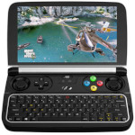
GPD Win2∗ 介紹
∗ 拆機
∗ 使用Micro HDMI輸出
∗ 固定螢幕開闔角度為165度
∗ 如何限制CPU功率在3W
∗ 如何解決玩DOSBox半屏的問題
⊕ Debian 9.0
∗ 安裝系統(LXDE)
∗ 安裝系統(XFCE)
∗ 安裝QQ輕聊版
∗ 如何解決Screen Tearing問題
∗ build mesa
∗ build ppsspp
∗ build retroarch
∗ build pcsx rearmed
∗ build kernel 4.18.0
∗ build desmume 0.9.11
GPD Win 上蓋鋁合金版
∗ 介紹
∗ 拆機
∗ 更換DPad按鍵
∗ Mini HDMI輸出
∗ 安裝Arch Linux
∗ SDCard讀取會讓遊戲卡頓
∗ 為何充電充一個晚上變成無法開機
∗ 逆向按鍵更新程式(HJM1954M Updater)
⊕ Debian 9.0
∗ 編輯Menu
∗ 安裝系統(LXDE)
∗ 安裝系統(XFCE)
∗ 支援SDCard 128GB
∗ 停止Suspend(闔上螢幕時)
∗ 如何讓PCSX-ReARMed的畫面可以拉伸
∗ 如何解決iBus無法修改字型大小的問題
∗ build ppsspp
∗ build retroarch
∗ build pcsx rearmed
∗ build kernel 4.18.0
∗ build kernel 4.13(Hans de Goede)
GPD Win
∗ 介紹
∗ 安裝Debian 8.0
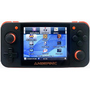
RG350∗ 介紹
∗ 拆機
∗ 可視角
GCW Zero
∗ 介紹
∗ 拆機
∗ 實驗機
∗ Telnet連線
∗ 焊接UART接頭
∗ 安裝系統(QEMU)
∗ 安裝系統(Flash)
∗ 使用K101P軟膠墊
∗ 使用32G SDCard
∗ 更換螢幕(3.5吋 IPS HX8363-A 解析度640x480)
∗ 更換螢幕(3.5吋 IPS HX8347-A01 解析度320x240)
∗ 更換螢幕(3.5吋 TFT TM035KDH03 解析度320x240)
∗ 更換螢幕(3.5吋 TFT KD035G6-54NT-A1 解析度320x240)
∗ build ubiboot
∗ build buildroot
∗ build kernel 3.12
∗ 解決"libmpc.so.3: cannot open shared object"問題
⊕ OpenDingux
∗ 組合鍵
∗ 中文化
∗ SDL Key
∗ Screenshot
∗ 如何設定非320x240解析度
∗ 如何讓GnGeo載入unibios
∗ 如何更改GCW0(GCW主題)成中文主題
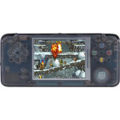
RetroGame∗ 介紹
∗ 拆機
∗ PCB焊點
∗ 螢幕可視角
∗ 解析SDCard
∗ 支援振動馬達
∗ 焊接UART接頭
∗ 移植FCEUX(支援振動)
∗ 支援SDCard 128GB啟動
∗ 電池改造(3220mA + 1000mA)
∗ 為何總是Segmentation fault在SDL_MUSTLOCK
∗ 如何替換系統
∗ 如何設定TVOut
∗ 如何調整LCD背光
∗ 如何設定聲音大小
∗ 如何取得電池資訊
∗ 如何替換UBoot圖片
∗ 如何得知USB是否連線
∗ 如何強制使用A320解析度
∗ 如何得知Power按鈕的GPIO
∗ 如何得知外部SDCard是否插入
∗ 如何掛載Partition到USB裝置
∗ 如何燒錄新編譯的Kernel 2.6.31.3
∗ 如何從GBA卡匣的SDCard載入rootfs
∗ 如何讓buildroot重新編譯指定的套件
∗ 解決"undefined reference to _mcount"
∗ 解決"Buildroot: cannot have a trailing slash. Stop."
∗ 解決"libpng warning: iCCP: known incorrect sRGB profile"
∗ write dma framebuffer
∗ build smw
∗ build sms
∗ build np2
∗ build gmu
∗ build gpsp
∗ build srb2
∗ build ketm
∗ build vice
∗ build bard
∗ build pang
∗ build cdogs
∗ build colem
∗ build o2xiv
∗ build ohboy
∗ build oswan
∗ build regba
∗ build flite
∗ build handy
∗ build fceux
∗ build gngeo
∗ build quake
∗ build spout
∗ build gnuboy
∗ build triple
∗ build homing
∗ build speccy
∗ build chroma
∗ build dosbox
∗ build digger
∗ build czdoom
∗ build sdlpal
∗ build hhexen
∗ build jzintv
∗ build shifty
∗ build temper
∗ build wolf3d
∗ build boulder
∗ build openbor
∗ build noiz2sa
∗ build jinyong
∗ build eduke32
∗ build bennugd
∗ build gmenu2x
∗ build uae4all
∗ build bermuda
∗ build ganbare
∗ build race-od
∗ build openmsx
∗ build snowman
∗ build rockbot
∗ build scummvm
∗ build wizznic
∗ build spartak
∗ build fba-sdl
∗ build fba-a320
∗ build apricots
∗ build supertux
∗ build snes9x4d
∗ build meritous
∗ build just4qix
∗ build glutexto
∗ build hheretic
∗ build gambatte
∗ build arkanoid
∗ build nxengine
∗ build pcsx4all
∗ build picodrive
∗ build sdlquake2
∗ build tileworld
∗ build dcastaway
∗ build sparrow3d
∗ build libvorbis
∗ build freedroid
∗ build buildroot
∗ build mrdrillux
∗ build commander
∗ build opentitus
∗ build prosystem
∗ build zelda-roth
∗ build opentyrian
∗ build pocketsnes
∗ build onscripter
∗ build puzzletube
∗ build asciiportal
∗ build shisen-seki
∗ build stransball2
∗ build meteoroid3d
∗ build dingux-2600
∗ build profadeluxe
∗ build last-mission
∗ build reminiscence
∗ build dingux-atari
∗ build dingux-cap32
∗ build libvorbisidec
∗ build chocolate-doom
∗ build libmikmod 3.1.21.1
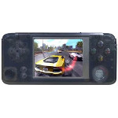
RetroGame Plus∗ 介紹
∗ 拆機
∗ 螢幕可視角
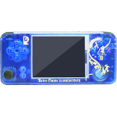
RetroGame Plus (2週年紀念版)∗ 介紹
∗ 拆機
∗ PCB焊點
∗ 螢幕可視角
∗ 支援振動馬達
∗ 移植FCEUX(支援振動)
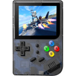
RG300∗ 介紹
∗ 拆機
∗ PCB焊點
∗ 螢幕可視角
∗ 支援振動馬達
∗ 焊接UART接頭
∗ 移植FCEUX(支援振動)
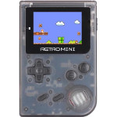
RetroMini∗ 介紹
∗ 拆機
∗ 屏腳位圖
∗ 螢幕可視角
∗ 屏幕顏色修正
∗ 安裝OpenDingux
∗ Telnet/SSH登入
∗ 更換螢幕(2.0吋 IPS LS020A8DX02)
∗ 如何解壓縮rootfs.squashfs(zstd compressed)
∗ build kernel
∗ build ubiboot
∗ build buildroot
∗ 移植PCSX4ALL
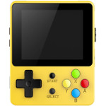
LDK GAME (小龍王)∗ 介紹
∗ 拆機
∗ PCB焊點
∗ 支援振動馬達
∗ 移植FCEUX(支援振動)
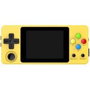
LDK GAME (小龍王橫板)∗ 介紹
∗ PCB焊點
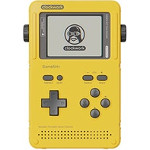
GameShell∗ 介紹
∗ 拆機
∗ 終極改造
∗ UART接頭
∗ 如何更改螢幕亮度
∗ 如何編譯一個最小的系統
∗ 如何透過UART執行GUI程式
∗ ssh(usb)
∗ ssh(wifi)
∗ build kernel 4.14.2
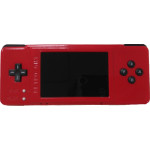
RetroPi CM3∗ 拆機
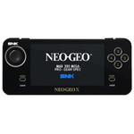
Neo Geo X v370∗ 介紹
∗ 拆機
∗ 更換觸控螢幕
∗ 更換類比搖桿
∗ SDCard0開機
∗ UART開機訊息
∗ 備份Flash資料
∗ 改機玩其它遊戲
∗ 焊接SDCard0、UART接頭
∗ 破解Ninja Master's SDCard
∗ 安裝原廠系統(Flash)
∗ 安裝新版模擬器(Flash)
∗ 安裝新版模擬器(SDCard0)
∗ build uboot
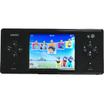
JXD 200∗ 介紹
∗ 拆機
∗ 焊接UART接頭
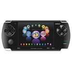
JXD 300∗ 介紹
∗ 拆機
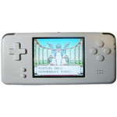
Revo K101 Plus∗ 介紹
∗ 拆機
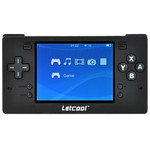
Letcool N350JP∗ 介紹
∗ 焊接UART接頭
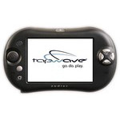
Tapwave Zodiac2∗ 介紹
∗ 拆機
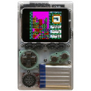
Odroid Go∗ 介紹
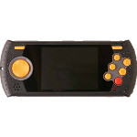
Atari Flashback Portable∗ 拆機
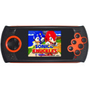
SEGA Gopher∗ 介紹
∗ 拆機
 Portable Video Game Player
Portable Video Game Player
∗ 拆機
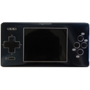
MyMedia∗ 拆機
∗ 螢幕可視角
PMP2
∗ 拆機
∗ 焊接UART接頭
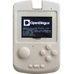
PMP V∗ 介紹
∗ 拆機
∗ mxu_as
∗ 終極改造
∗ jz_mxu.h
∗ 螢幕可視角
∗ USB Boot流程
∗ build jzboot
∗ build ubiboot
∗ build odboot-client
∗ build od-installer.bin
⊕ OpenDingux
∗ 安裝系統
⊕ Assembly
∗ UART
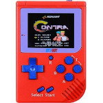
CoolBaby∗ 拆機
∗ 螢幕可視角
PAP K3
∗ 拆機
∗ 螢幕可視角
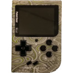
PokeGear∗ 拆機
∗ 螢幕可視角
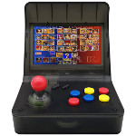
RetroArcade∗ 拆機
∗ 焊接UART接頭
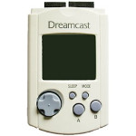
Visual Memory Unit∗ 介紹
∗ 拆機
⊕ STM32F103
⊕ 1.5吋 TFT ST7789V 解析度240x240
∗ 硬體焊接
∗ 可視角
∗ 開發環境
∗ 屏幕測試(GPIO)
∗ 超頻測試(128MHz)
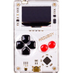
Arduboy∗ 介紹
∗ 拆機
∗ 列印支撐架
∗ 焊接燒錄腳位
∗ Dump原廠韌體
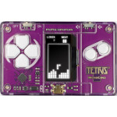
Tetris MicroCard∗ 介紹
∗ 拆機
∗ 列印支撐架
∗ 焊接燒錄腳位
∗ Dump原廠韌體
Hello Kitty
∗ 拆機
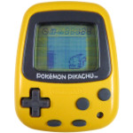
Pokemon Pikachu∗ 拆機
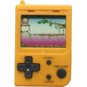
Nintendo Donkey (Stadlbauer)∗ 拆機
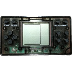
GAME BOX neo∗ 拆機
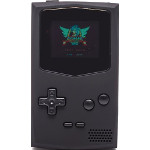
PocketSprite∗ 拆機
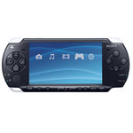
PSP 1007∗ 介紹
∗ SDCard 256G
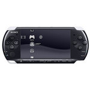
PSP 2007∗ 介紹
∗ Samsung 3.7V 2500mA電池
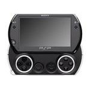
PSP Go∗ 介紹
∗ 電池厚蓋
∗ 山寨3.7V 1800mA電池
∗ 使用MicroSD取代M2記憶卡
∗ LIP1412 3.7V 1860mA電池
∗ HTC Kaiser 3.7V 1250mA電池
⊕ PSPDev
∗ build psptoolchain
∗ build atari2600-1.1.4
∗ build atari7800-1.2.0
∗ build atari800-2.1.0.1
∗ build colecovision-2.6.1
PS Vita
∗ 介紹
∗ 類比搖桿Pinout
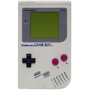
Game Boy∗ 拆機
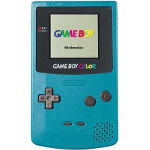
Game Boy Color∗ 拆機
Game Boy Advance
∗ 介紹
∗ 更換高亮度螢幕
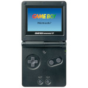
Game Boy Advance SP∗ 介紹
∗ 修復螢幕水波紋問題
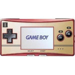
Game Boy Micro∗ 介紹